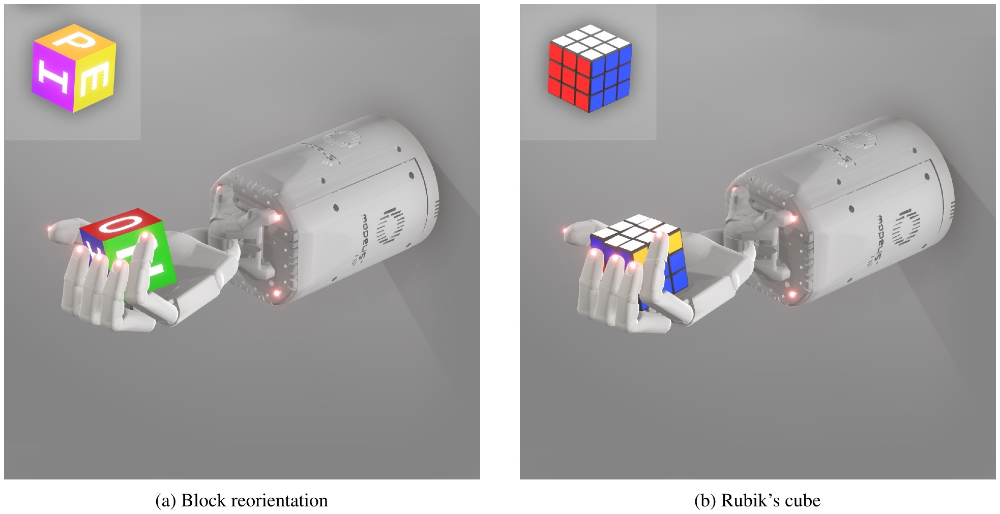

Simulating a natural world (tools)
Example 1: Rubik's Cube

fully simulated world
physics engine: MuJoCo
renderer: Unity (ORRB)
randomization: ADR, physics and visual ranges widen
labels: free from the simulator
Example 2: Foggy Scene Understanding
I = J·t + A(1−t)
fog physics only
no physics engine, no renderer
labels: inherited
Figure 3: OpenAI et al., Solving Rubik's Cube with a Robot Hand (arXiv 1910.07113).
Fog model: Sakaridis, Dai and Van Gool (arXiv 1708.07819), computed live on: "Muni route 33 trolleybus at 18th and Castro, September 2021", photo by Evan0512, CC BY-SA 4.0, Wikimedia Commons; depth: road-plane estimate.